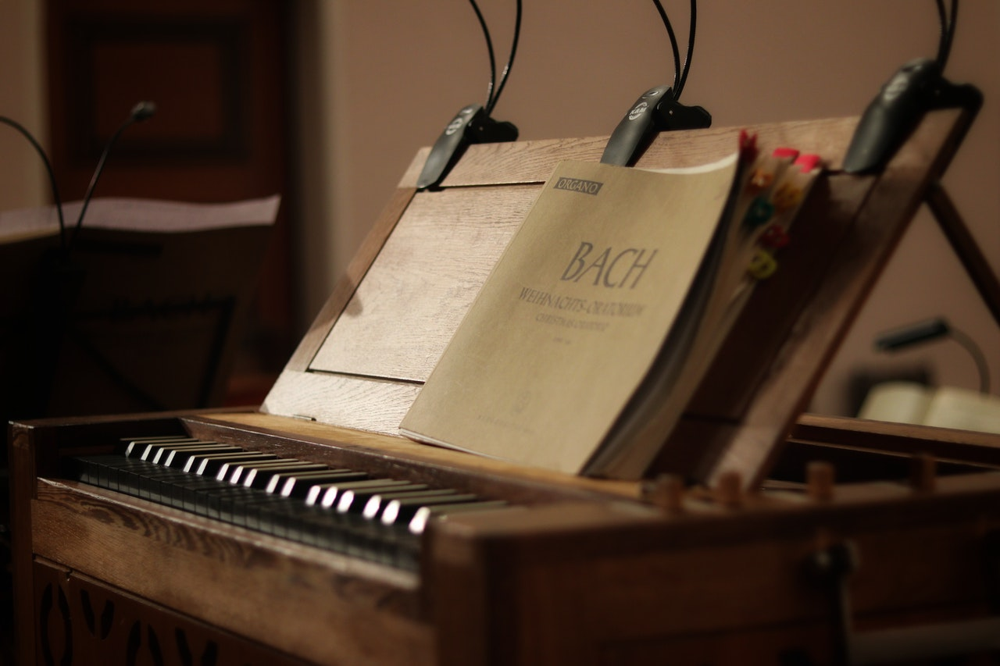

10 Мая, 2020
Какие книги для фортепиано использовать, чтобы учиться
Есть много инструкций по игре на фортепиано, которые вы можете купить онлайн или в музыкальных магазинах, чтобы стать лучшими пианистами. На самом деле, если вы действительно хотите стать хорошим пианистом, вам, скорее всего, понадобится какая-нибудь музыкальная книга, чтобы дать вам практические упражнения...